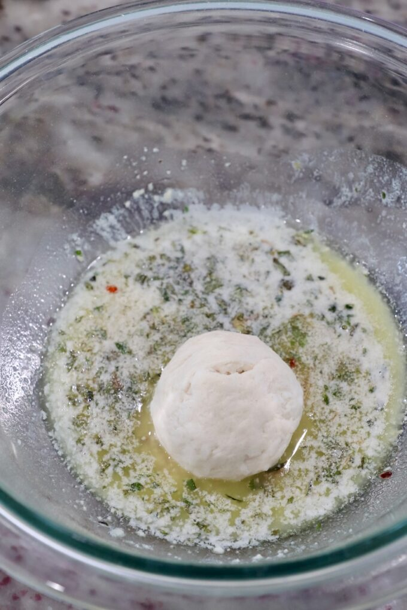
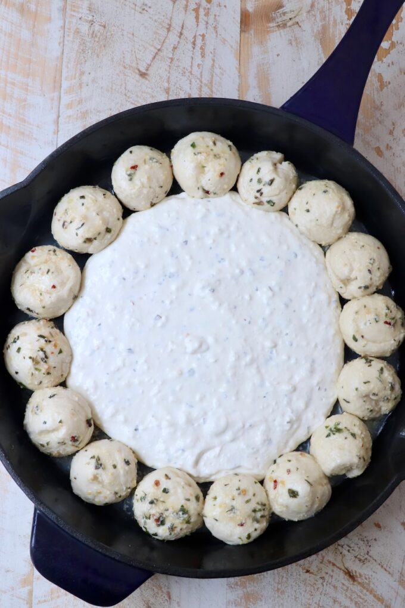

Ingredients
For the Pull-Apart Bread
- 16.3 ounce can Grands biscuit dough, 8 count
- ¼ cup melted butter
- 2 teaspoons parmesan cheese, grated
- 1 teaspoon Italian seasoning
For the Pizza Dip
- 8 ounces cream cheese, softened
- 1 cup ricotta cheese
- 3 teaspoons Italian seasoning, divided
- 1 cup marinara sauce, or pizza sauce
- 1 ½ cups mozzarella cheese, grated
- 8 slices pepperoni, quartered (optional topping)
Instructions
- Preheat the oven to 350°F.
- Cut each biscuit in half, then roll each half of dough into a ball.
- Combine the melted butter, parmesan cheese, and 1 teaspoon Italian seasoning in a bowl.
- Roll each of the balls of biscuit dough in the seasoned butter, then arrange them around the edge of a greased large cast iron skillet.
- In a large bowl, use an electric mixer to combine the cream cheese, ricotta cheese, and 2 teaspoons Italian seasoning.
- Spread the cream cheese mixture in the bottom of the skillet in the middle of the balls of dough.
- Top with the marinara sauce, shredded mozzarella cheese, and remaining 1 teaspoon Italian seasoning. Top with pepperonis or another pizza topping of your choice.
- Place in the oven and bake for 25-30 minutes.
More Photos


